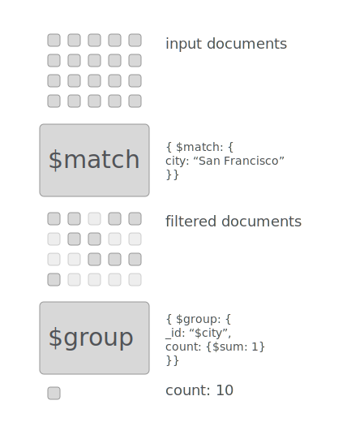

<html>
<head>
  <script src="https://derbyjs.github.io/derby-standalone/dist/0.6.0-alpha25/derby-standalone.min.js"></script>
  <script src="http://d3js.org/d3.v3.min.js" charset="utf-8"></script>
  <script src="http://underscorejs.org/underscore-min.js"></script>
  <script src="./lib/mingo.min.js" charset="utf-8"></script>

  <link href="index.css" rel="stylesheet" type="text/css">
  <style>
  </style>
</head>
<!-- we create a template to use as the body -->
<script type="text/template" id="body">

<div class="explain">
  <h1>MongoDB Aggregation Explanations</h1>
  <div class="topic">
    <p>
    The <a href="http://docs.mongodb.org/manual/core/aggregation-pipeline/">MongoDB aggregation pipeline</a> is  
     &nbsp; a powerful tool with a powerful learning curve. 
    This page attempts to explain the concepts involved by letting you play with some data.
    </p>
  </div>

  <view is="intro"></view>

  <view is="pipeline"></view>


  <div class="h2banner">
    <h2>Thanks</h2>
  </div>

  <div class="post topic">
    explanation by <a href="https://twitter.com/enjalot">@enjalot</a> with <a href="http://derbyjs.com">DerbyJS</a>
  </div>

</div>

</script>

<script type="text/template" id="intro">
{{console.log("hq", highlightQuery)}}
  <div class="intro topic">
    <div class="float-container">
      <div>
        <p>
          The aggregation pipeline essentially lets you count things in a collection.
          &nbsp; To explain how we aggregate with mongo we will need some sample data in a collection. 
          <br><br>
          Let us use XXX as our dataset, we can see &nbsp;
          <a on-mouseover="toggle('highlightResult')" on-mouseout="toggle('highlightResult')" class="result">
            {{filtered.length}} entries
          </a>
             &nbsp; out of {{data.length}} total documents. &nbsp;

          We can also view the data as <a on-click="toggle('useTable')">
            {{if useTable}}JSON{{else}}a Table{{/if}}
          </a>.
        </p>
        <p>
          We can query our collection using the standard mongo query syntax. Try modifying &nbsp;
           the <span on-mouseover="toggle('highlightQuery')" on-mouseout="toggle('highlightQuery')" class="query">query</span> below
            &nbsp; to see the <span class="result" on-mouseover="toggle('highlightResult')" on-mouseout="toggle('highlightResult')">results</span> change.
        </p>

        <view is="json-editor" query="{{query}}" highlight="{{highlightQuery}}"></view>
        <p>
          We limit the query to <input value="{{limit}}" size=3> results.
          <br>
          Try filtering on any of the keys available: 
          {{each keys as #key}}
            <span class="key">{{#key}} </span>
          {{/each}}
          <br>
          Some example queries:
          <a class="example" on-click="example1()">All entries</a> -
          <a class="example" on-click="example2()">foo</a> - 
          <a class="example" on-click="example3()">bar</a> 
        </p>
      </div>
      <div class="intro-results float-right {{if highlightResult}}highlight-result{{/if}}">
        {{if useTable}}
          <view is="result-table" data="{{filtered}}" keys="{{keys}}"></view>
        {{else}}
          <textarea class="json" wrap="off">{{filteredText}}</textarea>
        {{/if}}
      </div>
    </div>
  </div>


</script>

<script type="text/template" id="pipeline">
  <div class="h2banner">
  <h2>pipeline</h2>
  </div>
  <div class="pipeline topic">

    
    <div class="float-container">  
      <div class="float-right">
        
      </div>
    </div>


    <p>
    The way you aggregate data in MongoDB is by specifying a list of commands that will process the data in a collection.
    </p>
      <p>
       The reason it is called a pipeline is because data flows through it, going from one stage to the next.
       &nbsp; There is a stage for each command, and it is helpful to think in terms of what goes into the stage and what comes out.
      </p>
      <p>
      The entire collection goes into the first stage, and what comes out depends on which command you use.
      &nbsp; Typically the first command is <span class="command">$match</span> because it lets you specify a <span class="query" on-mouseover="toggle('highlightQuery')" on-mouseout="toggle('highlightQuery')">
      query</span>
      </p>
      <view is="json-editor" query="{{match}}" highlight="{{highlightQuery}}"></view>

  </div>
</script>

<script type="text/template" id="json-editor">
  <div class="editor-container {{if error}}error{{/if}} {{if highlight}}highlight{{/if}}">
    <textarea class="editor">{{queryText}}</textarea>
  </div>
</script>

<script type="text/template" id="result-table">
  <table class="results">
    <thead>
    <tr>
      {{each keys as #key}}
        <td>{{#key}}</td>
      {{/each}}
    </tr>
    </thead>
    <tbody>
    {{each @data as #row}}
      <tr>
        {{each keys as #key}}
          <td>{{#row[#key]}}</td>
        {{/each}}
      </tr>
    {{/each}}
    </tbody>
  </table>
</script>

<script type="text/template" id="individual">
  <div class="individual">

<!--
    <span class="sensor">
      <selectah 
        value="{{sensor}}" 
        editing="{{editing.sensor}}"
        options="{{sensors}}">
      </selectah>
    </span>
-->

  </div>

</script>

<script type="text/template" id="selectah" data-element="selectah">
  <span on-key="key($event)">
  {{if editing}}
    <select as="select" on-change="selected()">
      {{each options as #option}}
      <option value={{#option}} selected="{{value == #option}}">{{#option}}</option>
      {{/each}}
    </select>
  {{else}}
    <span class="input" on-click="edit()">
      {{value}}
  </span>
  {{/if}}
  </span>
</script>

<body>
</body>

<script type="text/javascript" src="./data.js"></script>
<script type="text/javascript" src="./index.js"></script>
</html>